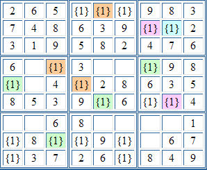
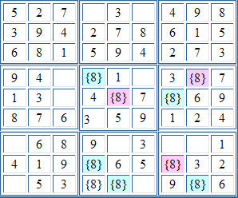
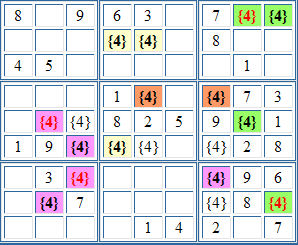

Sudoku Solving Techniques - ColouringColouring is a technique similar to forcing chains in that it looks for chains of connected cells. But while forcing chains consider cells with only two candidates that are connected by sharing a candidate, colouring considers cells where a particular candidate occurs for only two cells in a unit (row, column or block.) Consider this example:  (Note: The 1s in brackets {1} mark the cells where 1 appears as a candidate (along with other candidates) - they do not show the cell contents.) This example contains two separate conjugate chains - marked by orange/green and pink/blue. We're only interested in part of the orange/green chain, as colouring can show that r8c4 cannot be a 1, by considering the chain r8c3 => r4c3 => r5c1 => r5c4. The logic goes like this: if r8c3 is 1 then if r8c3 is not 1 then The conjugate chain for the above example is r8c3 => r4c3 => r5c1 => r5c4. Since this is a chain of conjugate cells, the links have alternate truth states - indicated by the green and orange shading in the above example, either the green cells must be true, that is, hold a 1, or the orange cells, but not both. Any other cells in the grid that share a unit with both a link having a true state, and a link having a false state, cannot hold the candidate and that candidate can be eliminated. This is how 1 was eliminated for r8c4 above. Here's another example:  In this example, we can show that the blue cells cannot hold the 8. This is because if r9c5 holds 8, then, following the conjugate chain, so must r8c4, and since both cells are in the same block, they can't both hold 8. This means that none of the blue cells can hold 8, and so all the pink cells must. Note r4c4 and r8c4, and r9c5 and r9c8 are not conjugates, and so cannot be used to colour each other, because of the candidate 8 in r9c4, When a unit has only two cells with a particular candidate, those cells are "conjugates" of each other, and are said to be "strongly linked". From the rule of Sudoku, we know that one of these cells must hold the number, and other cannot. Conversely, if we know that one of the cells cannot hold the number, then the other must. This allows us to form chains of cells, with successive cells having alternate "colours". (The term "colouring" is used because the technique is analogous to marking up the grid using coloured pens.) We don't know which colour represents the true state, but examination of the chain may enable us to make deductions leading to the elimination of candidates. Multi-Colouring: It is sometimes possible to connect together apparently separate chains.  The separate conjugate chains are indicated by different colour shading of the cell background (Note: this is different from the other examples, where colours indicate alternative conjugate cells). Take a close look at the pink and green chains, because they can be joined together. Cells r8c2 and r8c9 are weakly linked. They're not conjugates, or strongly linked, as there is another cell with a candidate 4 in the same row. Weakly linked cells means that one being true will cause the other to be false, but one being false does not cause the other to be true. The pink/green chains both have two cells that are weakly linked to cells in the other chain, r8c2 and r8c9, and also r5c2 and r5c8. What's more, these cells are linked to opposite links in the true/false alternate states (indicated by the red/black colouring of the 4s.) So, if r5c2 is true, then r5c8 is false, and then, because of the green conjugate chain, r8c9 is true. Alternatively, if r5c2 is false, then because of the pink conjugate chains, r7c7 is true, and so r8c9 is false, and then, because of the green conjugate chain, r5c8 is true. In other words, the two weak links have now joined the two separate chains into one strongly linked one. The net effect in the above example is that the candidate 4s in r5c3 and r8c7 can both be eliminated as they both share units with strongly conjugated cells. This technique is known as "simple colouring.", and "multi-colouring" when apparently separate colouring chains can be joined. There are also other colouring techniques, for example "super-colouring", a technique that makes deductions by combining the implications from conjugates of all candidates for all cells, although this technique is beyond the ability of most, if not all, human solvers. Back to Sudoku Solving Techniques
|